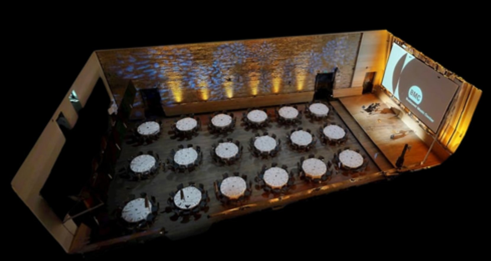
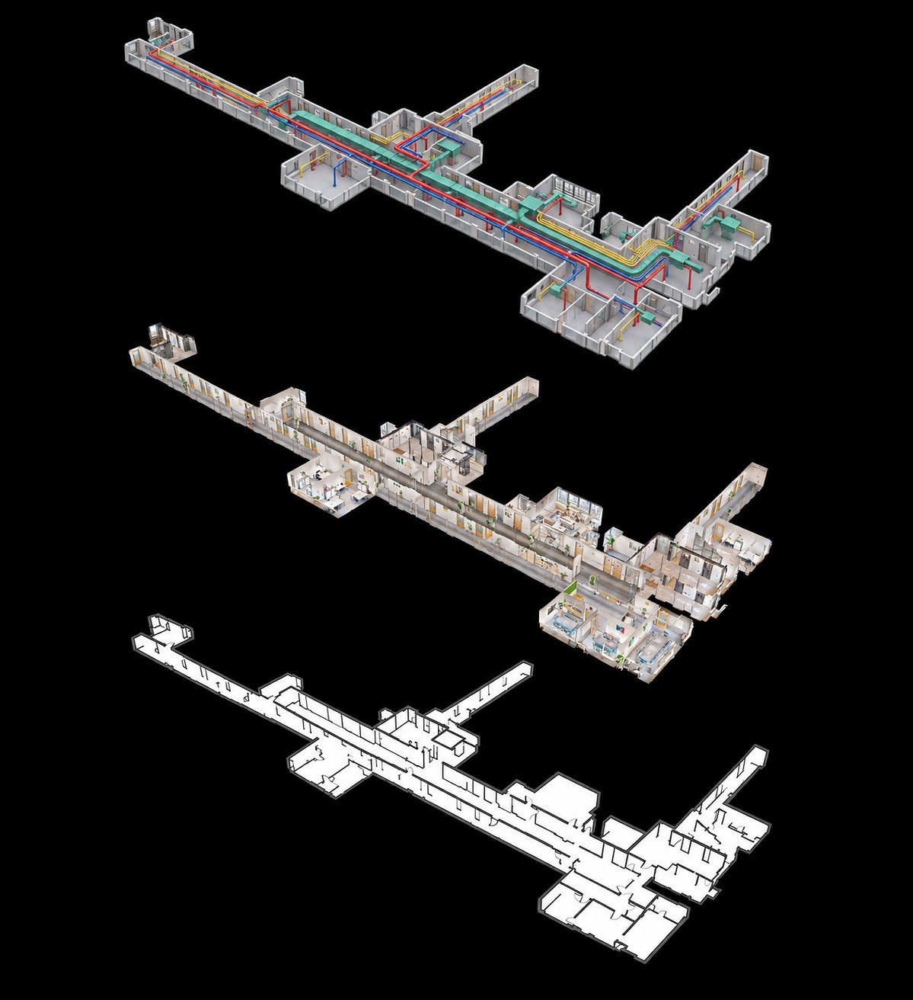
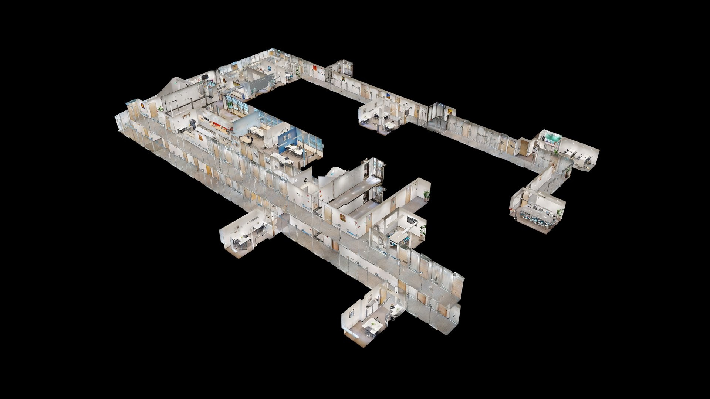
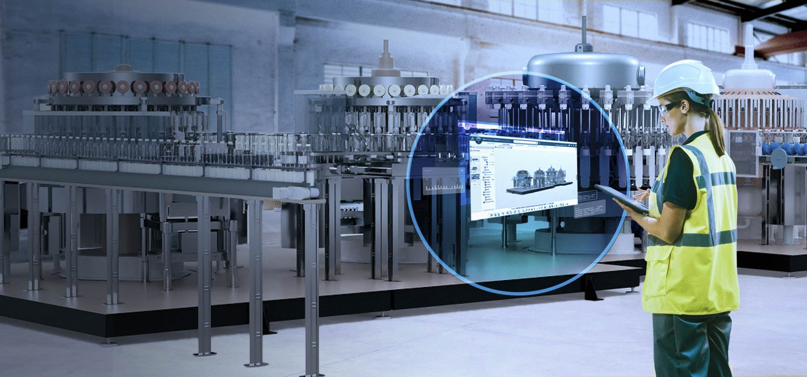
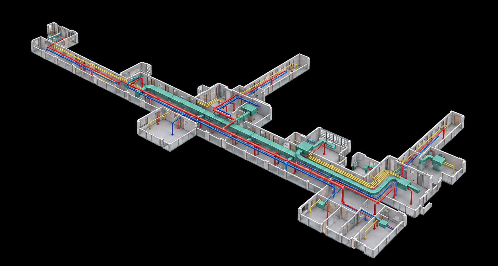

A kerület
3D-ben
Online bejárható terek, kapcsolat a lakossággal, pontos műszaki adatok, gyorsabb döntések, átláthatóbb vezetés.
Ismerős helyzetek az épületek körül
Hosszabb távon
- Az épületek állapotáról szóló tudás több helyen, több kollégánál van.
- Egy üres helyiség hasznosítása sok egyeztetéssel jár.
- A felújítások tervezéséhez gyakran újra fel kell mérni a meglévő állapotot.
- A helyi kulturális és ipari értékek leginkább helyben ismerhetők meg.
A napi munkában
- Bejárás egy-egy érdeklődőnek vagy vállalkozónak.
- Alaprajz és méret keresése régebbi dokumentumokban.
- Ugyanazok a kérdések: mekkora, hogyan közelíthető meg, mi van a falban?
Ezekben a helyzetekben a digitális bejárás nem helyettesíti a helyszínt, de sok utat és egyeztetést megspórolhat.
Egy felmérés, több felhasználó
Ugyanaz a digitális tér több területen is használható, ezért egy felmérés értéke több helyen jelenik meg.
Polgármesteri Hivatal
Döntés-előkészítés, városfejlesztés, tájékoztatás.
Csepeli Városgazda
Üzemeltetés, karbantartás, betanítás.
Ingatlanhasznosítás
Helyiségek bemutatása bérlőknek, vevőknek.
Intézmények
Rendezvénytermek, kiállítások, közösségi terek.
Tervezők, kivitelezők
Meglévő állapot, méretek, műszaki adatok.
Lakosság
Tájékozódás, akadálymentes megközelítés.
Mi a digitális bejárás?
- Bejárható térA valós épület pontos, bejárható mása, szintekkel és helyiségekkel.
- MakettnézetAz épület egésze egy nézetben, a terek kapcsolatával.
- Alaprajz és mérésMéretek közvetlenül a térből, méterben.
- Információs pontokDokumentum, fotó vagy link a térben, ahová tartozik.
- Szabályozott megosztásNyilvánosan, linkkel vagy védetten.
Böngészőből, telefonon és számítógépen is működik, program telepítése nélkül.

Látni és mérni: a tér adatai

Az épület rétegei egy felmérésből
Alul az alaprajz, középen a makettnézet, felül a belőle készült BIM-modell.

Méretek közvetlenül a bejárásból
Hossz, szélesség és belmagasság mérése méterben, helyszíni út nélkül.
Saját felmérések. A méretek tervezési és tájékozódási célra megbízhatók; mérnöki pontosság igényét előre egyeztetjük.
Tervezői adatok: kiindulópont a munkához
- E57 pontfelhőA tér geometriája szakmai tervezőszoftverekhez.
- BIM-modell (RVT, IFC)Épületmodell felújításhoz, üzemeltetéshez, vagyonkezeléshez.
- CAD-rajz (DWG, PDF)A meglévő állapot alaprajzai és mennyezeti rajzai.
- 3D adatcsomagTextúrázott 3D háló, nagy felbontású képek, mennyezeti nézet.
Ezek külön, igény szerint rendelhető kimenetek. Tartalmukat, részletességüket és pontosságukat a felhasználási célhoz igazítva, előre egyeztetjük.

Az épületek állapota egy helyen
Az épületekről szóló információ iratokban, fotókon és a kollégák tapasztalatában él.
Bejárható, mérhető tér alaprajzzal; a fontos dokumentumok a térben elhelyezve.
Gyorsabban megválaszolható kérdések, és a tudás kollégaváltáskor is megmarad.

Rögzített kiinduló állapot a felújítások előtt
A tervezéshez és az egyeztetésekhez gyakran újra ki kell menni az épülethez.
Felmérés a munka előtt, szükség esetén utána is; a két állapot összevethető.
Megalapozottabb tervezés, dokumentált átadás.
Helyiségek, amelyek online is megtekinthetők
Minden érdeklődőhöz bejárást kell szervezni, akkor is, ha végül nem lesz belőle szerződés.
A hirdetés vagy pályázati kiírás mellett bejárható helyiség, alaprajzzal és méretekkel.
Kevesebb kiszállás; személyesen többnyire már a komoly érdeklődők jönnek.
Saját munka: eladó ingatlan, Irhás árok
Az épület bemutatása új hasznosítás előtt
Egy kiürült épület bemutatása a lehetséges hasznosítóknak sok bejárást igényel.
A teljes épület egy linken, makettnézettel és alaprajzzal, az átalakítás tervezéséhez is.
Könnyebb első tájékozódás a döntéshozóknak és az érdeklődőknek.

Helyismeret a kiszállás előtt
A szakember sokszor csak a helyszínen látja, mi vár rá, és ezért többször kell kimennie.
Információs pontok a gépészeten: típus, dokumentáció, karbantartási adatok a helyükön.
Felkészültebb kiszállás, könnyebben átadható helyismeret.

Ipari terek bemutatása távoli érdeklődőknek
Bérlőnek, befektetőnek vagy filmes helyszínkeresőnek már az első tájékozódáshoz is helyszíni út kell.
Bejárható csarnokok méretekkel; közben az ipari örökség állapota is rögzül.
Megalapozottabb első döntés, kevesebb eredménytelen bejárás.
Saját munka: Estonia ipari tér
Termek, amelyeket a szervező előre bejárhat
A szervező általában csak személyes bejárás után dönt, ami több egyeztetést jelent.
Bejárható termek elrendezési információkkal, a foglalási oldalon.
Felkészültebb érdeklődők, kevesebb egyeztetési kör.
 Budapest Music Center3D bejárás indítása
Budapest Music Center3D bejárás indításaSaját munka: Budapest Music Center
Kiállítások és terek, amelyek a bezárás után is elérhetők
Az időszaki kiállítások lebontás után eltűnnek; a helytörténeti értékek csak helyben láthatók.
Digitális archívum és online kiállítás a kerület kulturális tereiről.
Szélesebb elérés, iskolai felhasználás, dokumentált kulturális érték.
 József Attila Emlékhely3D bejárás indítása
József Attila Emlékhely3D bejárás indításaSaját munka: József Attila Emlékhely
Dokumentált építési szakaszok, takarás előtt
A falba és födémbe kerülő gépészet később csak bontással ellenőrizhető.
Felmérés a takarás előtt és átadáskor; a gépészet nyomvonala visszanézhető.
Egy későbbi javításnál vagy átalakításnál pontosabb tájékozódás.

Helyismeret mielőtt valaki elindul
Ügyfél, új munkatárs vagy beavatkozó először ismeretlenként érkezik egy épületbe.
Bejárható ügyfélterek, megjelölt útvonalak és fontos pontok; a betanítás támogatása.
Könnyebb tájékozódás és betanulás; a biztonsági előírásokat nem váltja ki, hanem kiegészíti.
Eldönthetjük, ki mit láthat
Bárki megtalálhatja
Honlap, hirdetés, pályázati kiírás.
Csak akinek elküldik
Ajánlat, egyeztetés, tervezői munka.
Jelszóval vagy belső fiókkal
Óvodák, iskolák, hivatali és gépészeti terek.
Hol segíthet a kerületnek?
Nem minden épületnél és területen van rá szükség. Ott érdemes alkalmazni, ahol a helyszín ismerete ma sok időt, utat vagy egyeztetést igényel.
Kapcsolat a lakossággal
A lakosok online megismerhetik a kerület épületeit és kiállításait, a térben elhelyezett tartalmakkal pedig folyamatosan tájékoztathatók.
Átláthatóbb épületállomány
A terek valós állapota egy helyen, bejárhatóan.
Kevesebb kiszállás
Bemutatás, egyeztetés és felkészülés távolról is.
Megalapozott tervezés
Méretek és műszaki adatok a meglévő állapotról.
Megmaradó tudás
Az épületek ismerete nem néhány kollégán múlik.
Közös áttekintés: hol segíthet a digitális tér?
Egy rövid egyeztetésen együtt kiválasztjuk azokat a területeket és épületeket, ahol a digitális bejárás valóban segítheti a kerület munkáját.